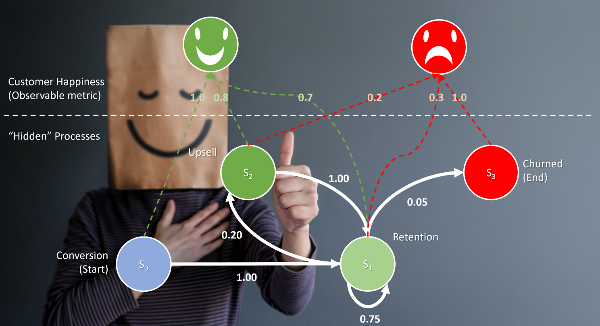

At the heart of intelligent decision-making in AI lies the Markov Decision Process (MDP)...
Imagine a world where machines think, adapt, and strategize,where AI doesn’t just react but plans ahead like a grandmaster in chess or a commander on the battlefield. At the core of this intelligence lies the Markov Decision Process (MDP),the silent architect of AI-driven decision-making.
An MDP is not just a mathematical framework; it’s the mind of an AI, sculpting its choices in an environment full of uncertainty and opportunity. Every action leads to a new reality, governed by states, actions, transition probabilities, and rewards,the fundamental building blocks that define how an agent navigates its world.
Think of an AI as an explorer in an ever-shifting labyrinth. With every step, it must weigh its options:
🔹 Stay on a safe path or take a risky shortcut?
🔹 Seek immediate rewards or strategize for long-term gain?
🔹 Adapt to unexpected twists or rigidly follow predefined rules?
In this high-stakes game of decision-making, MDPs transform randomness into strategy, chaos into control, and uncertainty into intelligence. Whether it's a self-learning robot, a financial AI predicting market trends, or a self-driving car avoiding collisions, MDPs are the invisible force shaping their choices.
This isn’t just about algorithms,it’s about teaching machines to think, predict, and evolve. And in the grand arena of AI, those who master MDPs don’t just solve problems,they define the future.
